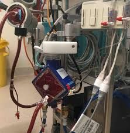
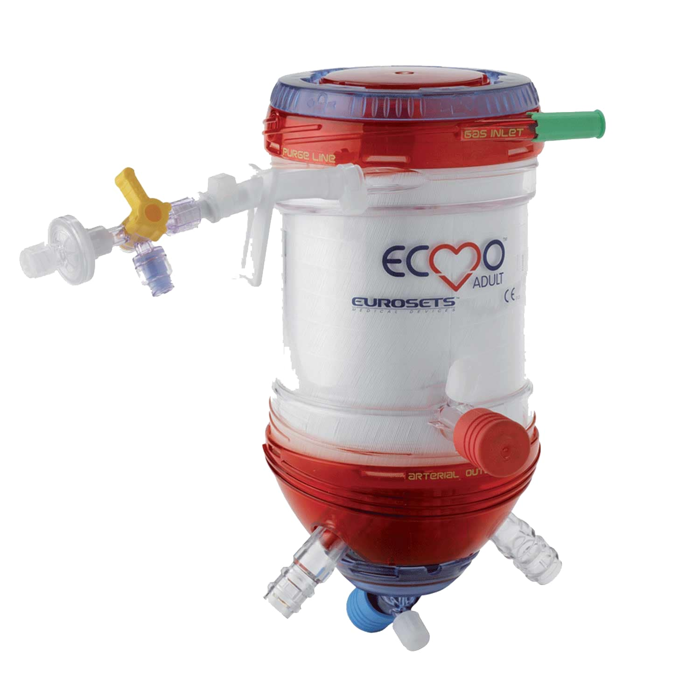
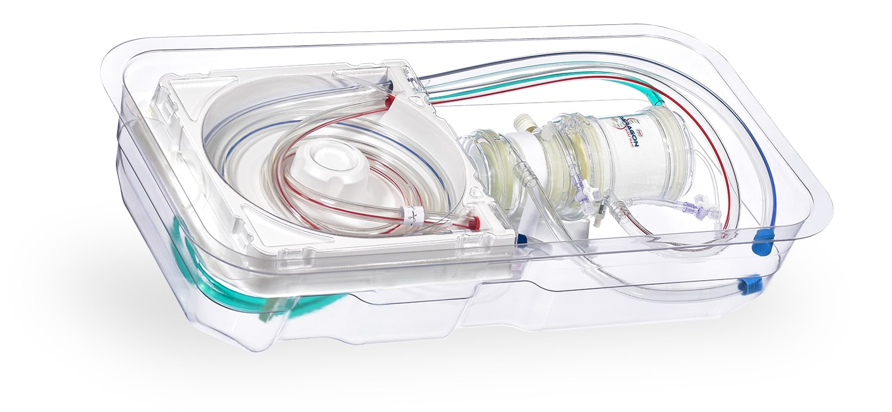
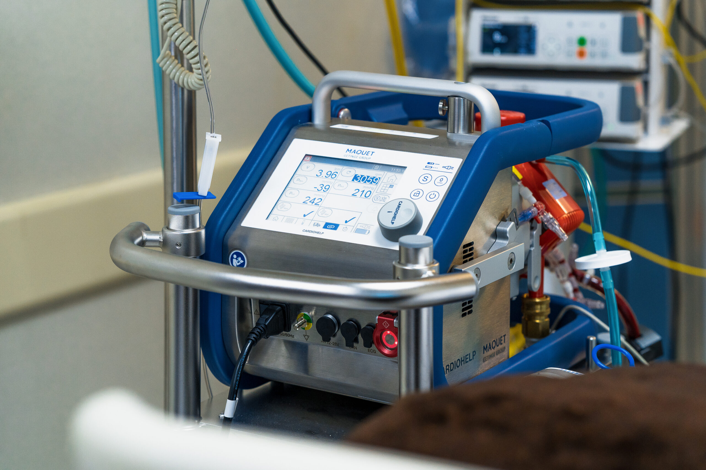

At Vitaflow Medical, our innovative swappable ECMO kits revolutionize life-saving care for patients with heart or lung failure. Our modular systems reduce complications like blood clots and bleeding, ensuring safer, more efficient therapy.
Enhanced Safety: Advanced coatings reduce blood cell damage (hemolysis) by up to 8%, based on recent research (Raman et al.).
Clinician-Friendly: Easy-to-use kits streamline ICU operations, saving time and lives.
What Clinicians Say
"Vitaflow’s kits cut circuit changes by half, improving patient outcomes." – Dr. Sarah Lin, ICU Specialist
"The modular design is a game-changer for managing ECMO in emergencies." – Dr. Michael Patel, Cardiologist



About Vitaflow Medical
Our Mission
Transforming ECMO therapy with modular, portable solutions that prioritize patient safety and clinical efficiency.
Our Story
Founded in 2020 by a team of biomedical engineers and clinicians, Vitaflow Medical was born from a vision to make ECMO safer and simpler. Inspired by challenges during the COVID-19 pandemic, where ECMO survival rates averaged 40–50% (Murakami et al. 515), we developed swappable kits to reduce complications like blood clots and bleeding.
Meet Our Team
Dr. Emily Chen, CEO: A biomedical engineer with 15 years of experience in medical device innovation.
Dr. Rajesh Kumar, Chief Medical Officer: A perfusionist dedicated to improving ECMO outcomes.
Laura Evans, CTO: Leads development of hemocompatible coatings to minimize blood damage.
Commitment to Safety
Our kits align with ISO 10993-4 standards, reducing red blood cell damage (hemolysis) and platelet activation, ensuring safer therapy for critical patients.
Vitaflow’s kits include a centrifugal pump, oxygenator, and tubing sets, designed for quick swaps to maintain therapy without interruption.
Centrifugal Pump: Delivers blood flow up to 7 L/min, minimizing shear stress that damages red blood cells.
Oxygenator: Oxygenates blood with a priming volume of 150 mL, reducing blood trauma.
Tubing Sets: Coated to lower clot formation by 5–8%, based on studies (Raman et al.).
Services
We offer clinician training, maintenance support, and custom kit configurations to meet hospital needs.

Blog: Insights on ECMO Innovation
The Future of ECMO: How Swappable Kits Improve Outcomes
Swappable ECMO kits reduce downtime, lowering risks of blood clots (thrombosis) by 5–8% and red blood cell damage (hemolysis) by up to 8% (Raman et al.). This means safer therapy and better survival rates, like the 40–50% seen in recent lung failure cases (Murakami et al. 515).
Clinicians report that Vitaflow’s kits cut setup time by 30%, allowing faster response in emergencies. Real-world feedback shows fewer bleeding complications with our coated tubing, aligning with studies on safer anticoagulants (Murakami et al. 516).


 Read More
Read More
 Read More
Read More